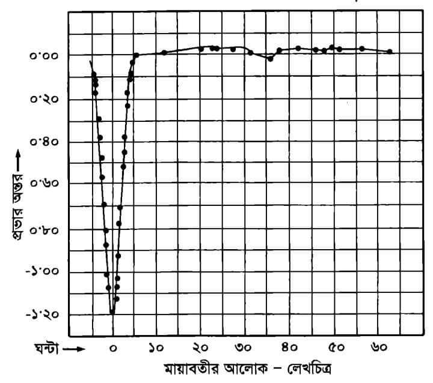

বিষম তারা
আকাশের সকল তারা দেখতে একই রকম হলেও এদের প্রকারভেদ করা হয় এবং এদের বিভিন্ন নাম দেওয়া হয়। এরকম কিছু প্রকারভেদের একটি হলো বিষম তারা। বিষম তারা হলো আকাশের সেই সকল তারা যাদের উজ্জ্বলতা সব সময় একই থাকে না। সময়ের সাথে সাথে এদের উজ্জ্বলতা বাড়তে বা কমতে থাকে। এদের উজ্জ্বলতা বাড়া বা কমার সাথে পৃথিবীর আবহাওয়ার কোন প্রকার সম্পর্ক থাকে না। আভ্যন্তরীণ কারণে যে সমস্ত তারার উজ্জ্বলতার তারতম্য ঘটে সেগুলোকে বিষম তারা বলে। এদের কত গুলোকে দূরবীনের সাহায্যে বিভক্ত করা যায়, আবার কতগুলোকে বিভক্ত করার জন্য বর্ণালী বিশ্লেষণের প্রয়োজন পরে।
এই বিষম তারা গুলোকে ৫ ভাগে ভাগ করা হয়। যেমন :-
- [1] অস্থায়ী বিষম তারা বা নবতারা।
- [2] দীর্ঘমেয়াদী বিষম তারা।
- [3] শেফালি বা সেফায়েড জাতীয় বিষম তারা।
- [4] আবরণী বিষম তারা।
- [5] অনিয়মিত বিষম তারা।
উপরের প্রকারভেদ গুলোতে যাওয়ার আগে আমাদের উজ্জ্বলতার শ্রেণি সম্পর্কে জানতে হবে। তারার উজ্জলতার এই শ্রেণি বিভাগ গুণোত্তর ধারা আনুসারে গঠিত হয়। এর সাধারণ অনুপাত ২.৫১২। অর্থাৎ প্রথম শ্রেণির তারা দ্বিতীয় শ্রেণির তারা থেকে ২.৫১২ গুণ এবং ষষ্ঠ শ্রেণির তারা থেকে ১০০ গুণ বেশি উজ্জ্বল। আপাত উজ্জ্বলতা বা তারা পৃষ্ঠ থেকে যতটুকু আলো পৃথিবীতে আসে তার ভিত্তিতে এই উজ্জ্বলতা শ্রেণি গঠিত। এর জন্য আমাদের সৌরজগতের সূর্যের আপাত উজ্জ্বলতা নির্ণয়ের শ্রেণি ঋণাত্নক হয়েছে। সূর্যের আলো শ্রেণির মাণ -26.7। দূরবর্তী তারা বা নক্ষত্রদের মাঝে সব চেয়ে বেশি উজ্জ্বল তারা হলো লুব্ধক। এর উজ্জ্বলতা মান -1.56। এবার প্রকারভেদ গুলোতে আসা যাক।
✰ নবতারা:- বিষম তারাদের মধ্যে নবতারাই সবচেয়ে বেশি চমকপ্রদ। আকাশের যেখানে কখনো কোন তারা দেখা যায়নি সেখানেও হঠাৎ করে উজ্জ্বল তারার দেখা পাওয়া যায়। এরকম ঘটনা সম্প্রতি ১৯১৮ সালের ৭ই জুন ঘটেছে। আকাশের ঈগল বা গড়ুর মন্ডলের একটি তারার সাথে ঘটে। একাদশ শ্রেণির সেই অতি অনুজ্জ্বল তারাটি হঠাৎ করে উজ্জ্বল হতে হতে কয়েক ঘণ্টার মাঝে প্রথম শ্রেণির তারায় পরিণত হয়। এবং পরবর্তী রাতে তার শ্রেণির মান দাঁড়ায় -1.2। আস্তে আস্তে কয়েক বছরের মধ্যে তারাটি তার পুর্বের অবস্থানে ফিরে যায়। এই রকমটি হয়ার কারণ সুপারনোভা।
✰ দীর্ঘমেয়াদী বিষম তারা: এই সমস্ত তারার বিষমতার কাল দীর্ঘ। সর্বনিম্ন উজ্জ্বলতা থেকে সর্বোচ্চ উজ্জ্বলতায় পৌছাতে বা সর্বোচ্চ উজ্জ্বলতা থেকে সর্বনিম্ন উজ্জ্বলতায় পৌছাতে এদের দীর্ঘ সময়ের প্রয়োজন হয়। এদের বিষমতার সময় কোন ক্ষেত্রে কয়েক মাস থেকে কয়েক বছর পর্যন্ত হতে পারে। এই সমস্ত তারাদের রং সাধারণত লাল হয় এবং বিষমতার কাল অনিয়মিত। এরকম একটি তারা হলো তিমি মন্ডলের "মিরা" তারাটি। এই তারা দশম শ্রেণি থেকে দ্বিতীয় শ্রেণি পর্যন্ত পৌছাতে ৩২০ থেকে ৩৭০ দিনের মতো সময় নিয়ে থাকে।
✰ শেফালি বা সেফায়েড জাতীয় বিষম তারা:- শেফালি মণ্ডলের চতুর্থ তারা ডেল্টা-শেফি থেকে এই জাতীয় বিষম তারাদের নাম করা হয়েছে শেফালী জাতীয় বিষম তারা। এই জাতীয় প্রত্যেকটি বিষম তারার সর্বোচ্চ ও সর্বনিম্ন উজ্জ্বলতার পার্থক্যের পরিমাণ ১ শ্রেণি এবং উজ্জ্বলতার বৃদ্ধির সময় কাল উজ্জ্বলতা হ্রাসের সময়কাল অপেক্ষা কম। এদের বিষমতার কাল নিখুঁত ভাবে নিয়মিত। বিভিন্ন শেফালী জাতীয় বিষম তারার বিষমতার কাল বিভিন্ন হলেও একই তারার বিষমতার কালে কোন সময়েই ১ সেকেন্ডের পার্থক্য হয় না। শেষোক্ত এই বৈশিষ্ট্য আবিষ্কার করেন "মিস হেনরিয়েটা লিভিট"৷
✰ আবরনী বিষম তারা:-
এই ধরণের তারার বিষমতার সহজ ব্যাখ্যা হলো এরা কোন একক তারা নয়, দুই টি তারার সমন্বয়ে গঠিত জোড়া তারা। এরা একে অপরকে কেন্দ্র করে ঘুরে ফলে আমরা উজ্জ্বলতার উঠানামা দেখি। এই সকল তারার বর্ণালী বিশ্লেষণ ও এই ব্যাখ্যাকে সমর্থন করে। পারসিয়াস মণ্ডলের দ্বিতীয় তারা মায়াবতী এই ধরণের বিষমতা প্রদর্শন করে। প্রায় ২ দিন এই তারা ২.৩ উজ্জ্বলতা শ্রেণিতে দেখা গেলেও একসময় এর উজ্জ্বলতা কমে আসে। ৫ ঘন্টা পর এর উজ্জ্বলতা কমে আসে ৩.৫ শ্রেণিতে এবং পরবর্তী ৫ ঘণ্টায় এর উজ্জ্বলতা ২.৫ এ উঠে আসে। নিচে এর উঠা নামার চিত্র দেওয়া হলো।

✰ অনিয়মিত বিষম তারা:- এদের বিষমতার কোন নির্দিষ্ট সময় নেই। এমিনকি কোন নিয়মের মধ্যেই এদের ফেলা যায় না। বর্ণালী বিশ্লেষণে এদের ভেতর কত গুলোকে সুপার নোভা বলে জানা যায়।
তথ্য সূত্র:
আবদুল জব্বার রচিত তারা পরিচিতি বই থেকে বেশ কিছু তথ্য নেওয়া হয়েছে। অনেক কিছুই আমার গত আড়াই বছর+ জ্যোতির্বিজ্ঞান চর্চার উপর ভিত্তি করে লেখা হয়েছে বলে আমি সব গুলোর তথ্য সূত্র দিতে পারছি না। তবে আমি আশাবাদী এখানে কোন ভুল তথ্য নেই, যদি থাকে তাহলে ইমেইলে (এখানে) বললে আমি সংশোধন করে নিব।
লেখাটি পড়ার জন্য ধন্যবাদ।
©সীমান্ত সাহা সরব